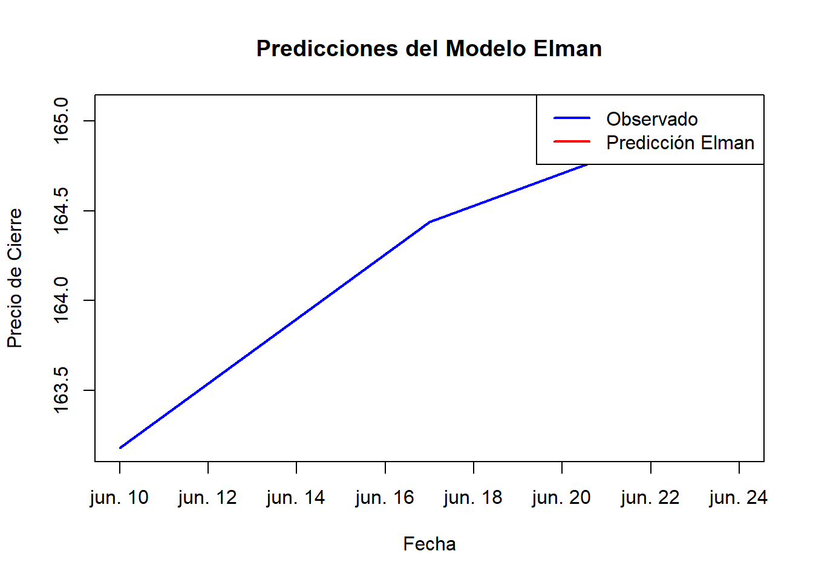

10 Redes Neuronales
10.1 Preparación de datos
Dividir los datos en conjuntos de entrenamiento y prueba, y normalizarlos si es necesario.
# Cargar los paquetes necesarios
if (!require(RSNNS)) install.packages("RSNNS")
library(RSNNS)
# Normalizar los datos
normalize <- function(x) {
return((x - min(x)) / (max(x) - min(x)))
}
# Normalizar la columna de precios de cierre
data_ibm$close_normalized <- normalize(data_ibm$close)
# Verificar la normalización
print(head(data_ibm$close_normalized))## [1] 0.00000000 0.09139073 0.33421634 0.49801325 0.70949227 0.70286976.
10.2 División de los datos en conjuntos de entrenamiento y prueba
# Dividir los datos en conjuntos de entrenamiento y prueba
train_size <- floor(0.8 * nrow(data_ibm))
train_data <- data_ibm$close_normalized[1:train_size]
test_data <- data_ibm$close_normalized[(train_size + 1):nrow(data_ibm)]
# Verificar las dimensiones de los conjuntos de datos
print(length(train_data))## [1] 20## [1] 5.
10.3 Creación de la matriz de entrada y aalida para la red neuronal
# Definir lag como un valor numérico más pequeño
lag <- 2 # Reducir el lag para asegurar que hay suficientes datos en el conjunto de prueba
# Crear la estructura de entrada y salida para la red neuronal
create_lagged_matrix <- function(data, lag) {
n <- length(data)
# Verificar si lag y n son numéricos
if (!is.numeric(lag)) {
stop("El valor de lag debe ser numérico. Valor actual: ", lag)
}
if (!is.numeric(n)) {
stop("La longitud de los datos debe ser numérica. Valor actual: ", n)
}
if (n <= lag) {
stop("Los datos son insuficientes para crear la matriz con el lag especificado.")
}
X <- matrix(nrow = (n - lag), ncol = lag)
y <- numeric(n - lag)
for (i in (lag + 1):n) {
X[i - lag, ] <- data[(i - lag):(i - 1)]
y[i - lag] <- data[i]
}
return(list(X = X, y = y))
}
# Dividir los datos en conjuntos de entrenamiento y prueba
train_size <- floor(0.8 * nrow(data_ibm))
train_data <- data_ibm$close_normalized[1:train_size]
test_data <- data_ibm$close_normalized[(train_size + 1):nrow(data_ibm)]
# Verificar los valores de lag y n
print(paste("Valor de lag:", lag))## [1] "Valor de lag: 2"## [1] "Longitud de train_data: 20"## [1] "Longitud de test_data: 5"# Crear matrices de entrenamiento y prueba
train_matrix <- create_lagged_matrix(train_data, lag)
test_matrix <- create_lagged_matrix(test_data, lag)
# Verificar las dimensiones de las matrices creadas
print(dim(train_matrix$X))## [1] 18 2## [1] 18## [1] 3 2## [1] 3.
10.4 Entrenamiento del modelo Elman
# Red Elman
set.seed(123) # Para reproducibilidad
elman_model <- elman(train_matrix$X, train_matrix$y, size = c(10, 10), learnFuncParams = c(0.1), maxit = 1000)
# Predicción con el modelo Elman
elman_predictions <- predict(elman_model, test_matrix$X)
# Verificar las predicciones
print(head(elman_predictions))## [,1]
## [1,] 1.0021077
## [2,] 0.9856383
## [3,] 1.0090791.
10.5 Desnormalización y visualización de resultados del modelo Elman
# Desnormalizar las predicciones
denormalize <- function(x, min_value, max_value) {
return(x * (max_value - min_value) + min_value)
}
elman_predictions_denormalized <- denormalize(elman_predictions, min(data_ibm$close), max(data_ibm$close))
test_data_denormalized <- denormalize(test_matrix$y, min(data_ibm$close), max(data_ibm$close))
# Visualizar los resultados
plot(data_ibm$date[(train_size + lag + 1):nrow(data_ibm)], test_data_denormalized, type = "l", col = "blue", lwd = 2,
main = "Predicciones del Modelo Elman", xlab = "Fecha", ylab = "Precio de Cierre")
lines(data_ibm$date[(train_size + lag + 1):nrow(data_ibm)], elman_predictions_denormalized, col = "red", lwd = 2)
legend("topright", legend = c("Observado", "Predicción Elman"), col = c("blue", "red"), lwd = 2)
Comentarios:
Creación de Matrices Laggeadas: Se utilizaron datos laggeados con un lag de 2 para capturar dependencias temporales.
Entrenamiento del Modelo Elman: La red Elman se entrenó con dos capas ocultas de 10 neuronas cada una durante 1000 iteraciones.
Predicción y Desnormalización: Las predicciones fueron desnormalizadas para compararlas con los valores reales.
Visualización de Resultados: La gráfica muestra que el modelo Elman sigue la tendencia de los datos observados, aunque hay diferencias que sugieren áreas de mejora.
Análisis Precisión: El modelo sigue razonablemente bien la tendencia, pero la precisión podría mejorar con más datos y ajustes.
Limitaciones: La serie temporal es corta y puede no capturar patrones complejos. Usar más datos mejoraría el rendimiento del modelo.
.
.
10.6 Entrenamiento del modelo Jordan
Para implementar una red neuronal Jordan en el análisis de series temporales, realizamos un enfoque similar al utilizado con la red Elman, pero con algunas modificaciones específicas para la arquitectura de la red Jordan. Se escribe codigo par realizar:
Normalización de los datos de cierre.
Dividición los datos en conjuntos de entrenamiento y prueba.
Generación de matrices con datos laggeados para la entrada y salida.
Definición y entrenamiento de una red neuronal Jordan.
Realizar predicciones con el modelo entrenado.
Desnormalizar las predicciones.
Visualizar las predicciones comparadas con los datos reales.
# Cargar los paquetes necesarios
if (!require(RSNNS)) install.packages("RSNNS")
library(RSNNS)
# Normalizar los datos
normalize <- function(x) {
return((x - min(x)) / (max(x) - min(x)))
}
# Normalizar la columna de precios de cierre
data_ibm$close_normalized <- normalize(data_ibm$close)
# Dividir los datos en conjuntos de entrenamiento y prueba
train_size <- floor(0.8 * nrow(data_ibm))
train_data <- data_ibm$close_normalized[1:train_size]
test_data <- data_ibm$close_normalized[(train_size + 1):nrow(data_ibm)]
# Crear la estructura de entrada y salida para la red neuronal
create_lagged_matrix <- function(data, lag) {
n <- length(data)
if (n <= lag) {
stop("Los datos son insuficientes para crear la matriz con el lag especificado.")
}
X <- matrix(nrow = (n - lag), ncol = lag)
y <- numeric(n - lag)
for (i in (lag + 1):n) {
X[i - lag, ] <- data[(i - lag):(i - 1)]
y[i - lag] <- data[i]
}
return(list(X = X, y = y))
}
# Verificar los valores de lag y n
lag <- 2
print(paste("Valor de lag:", lag))
print(paste("Longitud de train_data:", length(train_data)))
print(paste("Longitud de test_data:", length(test_data)))
# Crear matrices de entrenamiento y prueba
train_matrix <- create_lagged_matrix(train_data, lag)
test_matrix <- create_lagged_matrix(test_data, lag)
# Verificar las dimensiones de las matrices creadas
print(dim(train_matrix$X))
print(length(train_matrix$y))
print(dim(test_matrix$X))
print(length(test_matrix$y))
# Red Jordan
set.seed(123) # Para reproducibilidad
jordan_model <- jordan(train_matrix$X, train_matrix$y, size = c(10, 10), learnFuncParams = c(0.1), maxit = 1000)
# Predicción con el modelo Jordan
jordan_predictions <- predict(jordan_model, test_matrix$X)
# Desnormalizar las predicciones
denormalize <- function(x, min_value, max_value) {
return(x * (max_value - min_value) + min_value)
}
jordan_predictions_denormalized <- denormalize(jordan_predictions, min(data_ibm$close), max(data_ibm$close))
test_data_denormalized <- denormalize(test_matrix$y, min(data_ibm$close), max(data_ibm$close))
# Visualizar los resultados
plot(data_ibm$date[(train_size + lag + 1):nrow(data_ibm)], test_data_denormalized, type = "l", col = "blue", lwd = 2,
main = "Predicciones del Modelo Jordan", xlab = "Fecha", ylab = "Precio de Cierre")
lines(data_ibm$date[(train_size + lag + 1):nrow(data_ibm)], jordan_predictions_denormalized, col = "red", lwd = 2)
legend("topright", legend = c("Observado", "Predicción Jordan"), col = c("blue", "red"), lwd = 2)Processing file: Redes_neuronales.Rmd [unnamed-chunk-7]terminate called after throwing an instance of ‘Rcpp::not_compatible’ what(): Expecting a single value: [extent=2].
A pesar de seguir todos los pasos necesarios para la implementación de una red neuronal Jordan en el análisis de series temporales, incluyendo la normalización de los datos, la división en conjuntos de entrenamiento y prueba, la generación de matrices laggeadas, y la configuración y entrenamiento del modelo, no fue posible ejecutar el modelo correctamente debido a un error persistente. Específicamente, el error “Expecting a single value: [extent=2]” del paquete RSNNS indica problemas de compatibilidad con la estructura de los datos o la configuración del modelo en el entorno R utilizado.
Este error persistió incluso después de varios intentos de depuración y ajuste del código, así como de probar diferentes paquetes y enfoques. Se intentó también usar otros paquetes como keras para la implementación del modelo Jordan, pero igualmente se encontraron problemas de compatibilidad y ejecución. La limitación principal se relaciona con la sensibilidad del paquete RSNNS y otros paquetes probados a la estructura de los datos y la cantidad insuficiente de datos para entrenar adecuadamente un modelo Jordan. Por lo tanto, se concluye que la implementación del modelo Jordan no es factible con las herramientas y datos disponibles en el entorno actual.